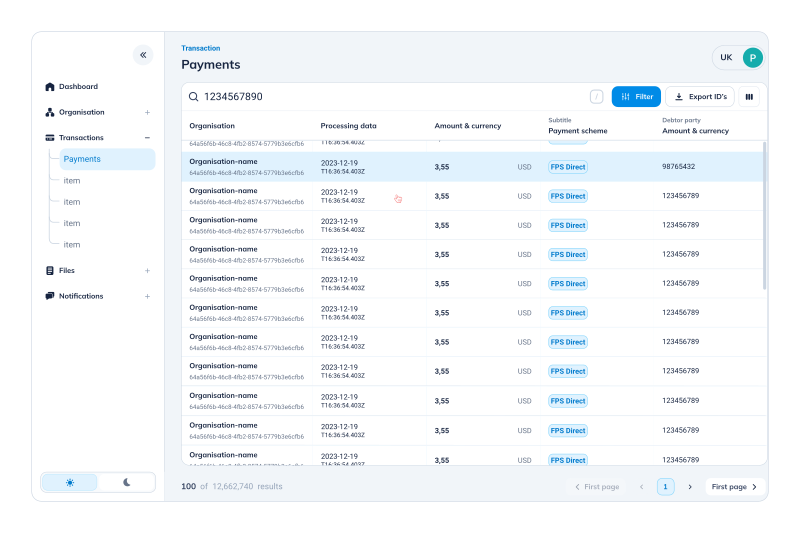
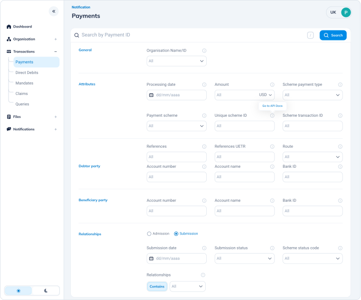
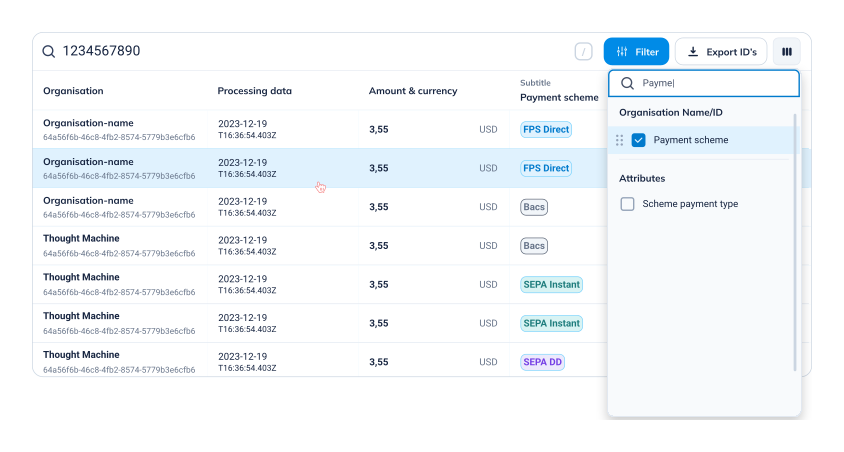
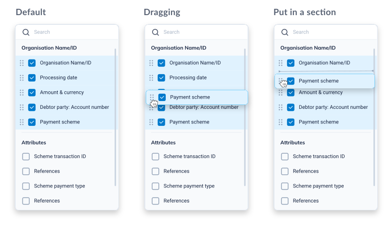
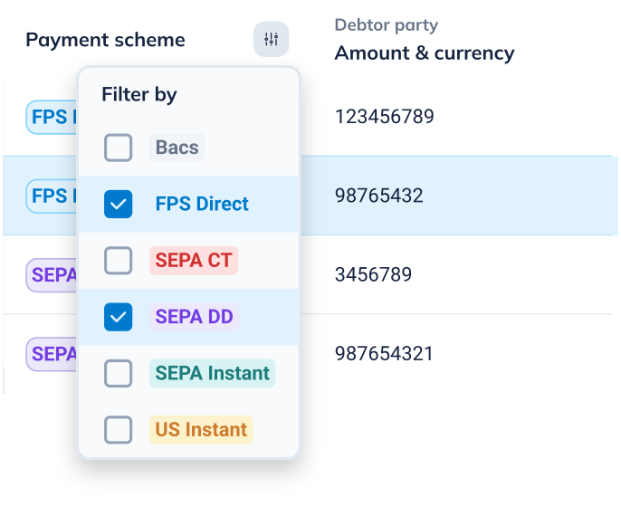
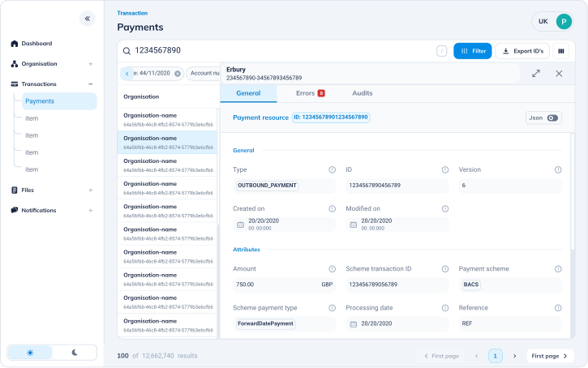

Redesigning an Internal Support Tool — and Discovering a Product Worth Selling
A fintech company's customer support team ran on an admin tool built in 2018. No one had ever measured how well it worked — until we did. Over the course of a year, I led research and redesigned the core workflows end-to-end.
The research uncovered a problem nobody had named: support agents weren't escalating to engineers because queries were technically complex. They were escalating because the tool didn't surface what they needed. And by the time we finished, stakeholders were asking a different question: could we sell this?

A tool built in 2018. No data collected since. Engineers doing work that wasn't theirs.
The Admin UI was the backbone of customer support operations — used to look up payments, investigate errors, and resolve user queries. It had been built in 2018 and never formally evaluated.
Is the tool still useful? Are users relying on it daily?
Where are the inefficiencies slowing the team down?
Should the tool be improved or deprecated?
40 surveys. 9 interviews. One number that changed everything.
Before designing anything, we needed to understand what was actually happening. This was the first time anyone had formally studied how the tool was used.
Two teams. Opposite needs. One rigid tool that served neither.
6 interviewed · Daily users handling payment queries and onboarding issues.
Need: Fast payment search, clear data visibility, efficient navigation.
Reality: Spending too long searching, escalating for information rather than expertise.
3 interviewed · Called in as escalation for queries support couldn't resolve.
Need: Quick access to technical details with minimal friction.
Reality: Resolving information problems, not technical ones — work that shouldn't have reached them.
If the tool surfaced the right information, support could solve 70% of queries without engineering.
The opportunity wasn't to build something new — it was to make what existed actually work. Three things stood between support and self-sufficiency: search speed, data visibility, and role flexibility.
During research, a pattern emerged outside the original brief: enterprise clients were requesting access to payment data. They wanted to investigate their own transactions without calling support. A customer-facing version could reduce inbound support volume — and become a premium product. Stakeholders were excited. Security analysis pending. Business case already made.
Research first. Then design for the specific workflow — not the generic one.
Five features. Each tied to a research finding. Every change earned.
Support agents searched with partial data — the tool required exact matches. We introduced flexible search with standardized filters, and aligned terminology with backend language.
→ Projected: 10% faster manual search with filter system
Design decision
Aligning search terminology with backend language removed a real-time translation step that happened every time support called engineering. That dependency was part of why escalation rates were so high.

Key fields were buried in visual noise. We introduced a collapsible sidebar, increased table visibility, and reorganized hierarchy around the 30-second scan that happened 50 times a day.
Design decision
Less visible at once meant faster access to what actually matters. The layout was optimized for one specific workflow — not for completeness.

Support needed payment status, amount, and date. Engineers needed error codes and API responses. One rigid table served neither. We enabled column add, remove, and reorder.
Design decision
One view for two teams with opposite needs creates a compromise that works for neither. Customization wasn't a nice-to-have — it was the only honest solution.

A failed payment handled as successful has real downstream costs. We introduced color coding for payment status, highlighted critical fields, and added inline filters for rapid refinement.
Design decision
Status visibility isn't a UX improvement — it's risk reduction. A misread status has a real cost: to the user, the support team, and the business.

Support agents regularly opened 3–5 browser tabs to compare payments. We enabled opening payment details without losing the list view — eliminating the workaround entirely.
Design decision
The browser tabs were a requirement nobody filed. Every workaround is a feature request in disguise. Removing it meant accepting that the original navigation model was wrong.

We came to improve a tool. We left with a business case for a new product.
The original question was: improve or deprecate? By the end, stakeholders were asking something different.
During research, enterprise clients were requesting access to payment data — they wanted to investigate their own transactions without calling support. A customer-facing version could reduce inbound support volume and become a premium offering.
Two metrics. One unexpected business case.
projected post-redesign
with filter system
first-ever baseline
6 support + 3 engineers
Three things that changed how I think about internal tooling.
Improving internal tools is about discovering what your team is capable of when the tool stops getting in the way.
And sometimes, what you build for your team turns out to be exactly what your customers needed too.